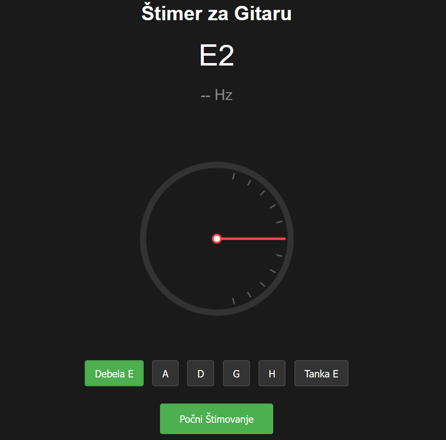

O Aplikaciji
Štimer za Gitaru je besplatna web aplikacija koja vam omogućava precizno štimovanje vaše gitare kroz mikrofon vašeg uređaja. Podržava standardno štimovanje (E A D G B E) i pruža vizuelne i zvučne povratne informacije za precizno štimovanje.

Pokreni Štimer
Funkcionalnosti
- Precizna detekcija frekvencije u realnom vremenu
- Vizuelni prikaz odstupanja od željene note
- Zvučna potvrda kada je žica naštimovana
- Podržava standardno štimovanje (E A D G B E)
- Jednostavan i intuitivan interfejs
- Radi na svim modernim browserima
Kako Koristiti
- Dozvolite pristup mikrofonu kada vas browser pita
- Izaberite žicu koju želite da štimujete
- Odsvirajte žicu i pratite pokazivač
- Podesite zategnutost žice prema uputstvima
- Sačekajte zvučni signal koji potvrđuje da je žica naštimovana
Saveti za Štimovanje
• Koristite u tihom okruženju za najbolje rezultate
• Držite gitaru blizu mikrofona
• Štimujte od najdeblje ka najtanjoj žici
• Proverite štim posle zamene žica